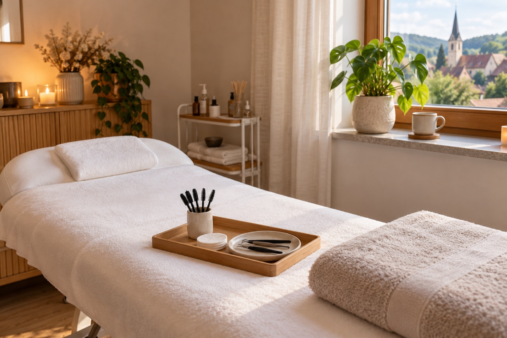
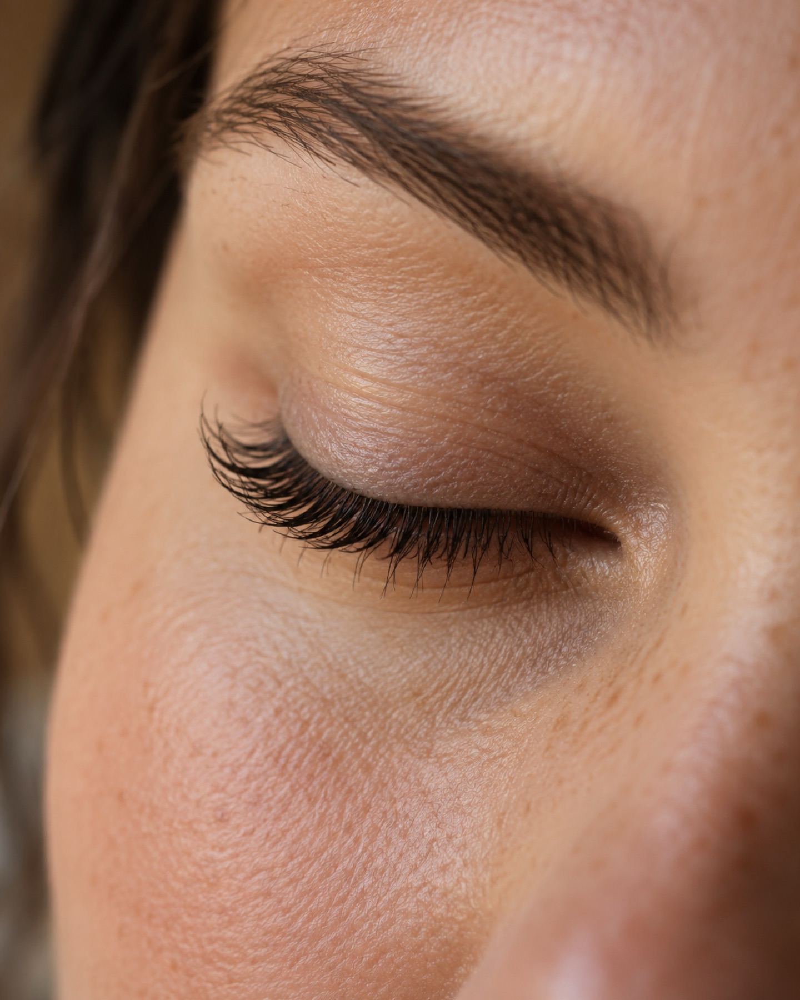
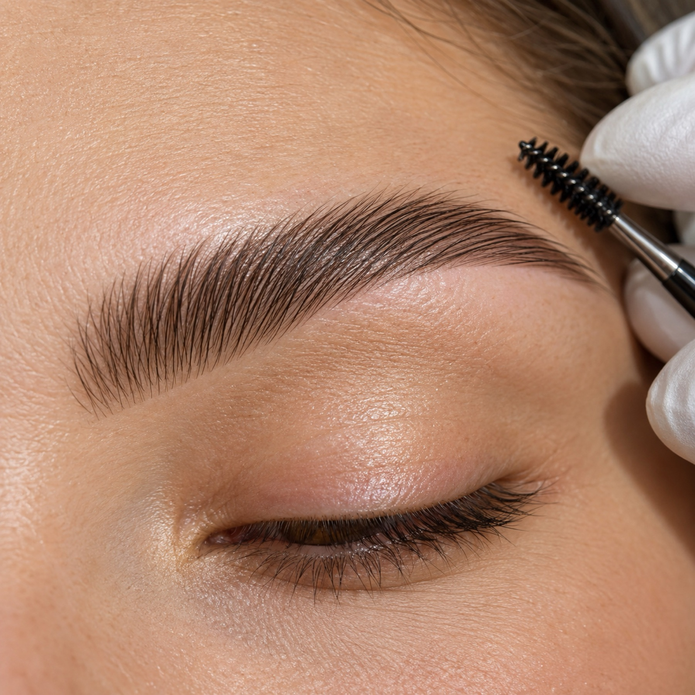
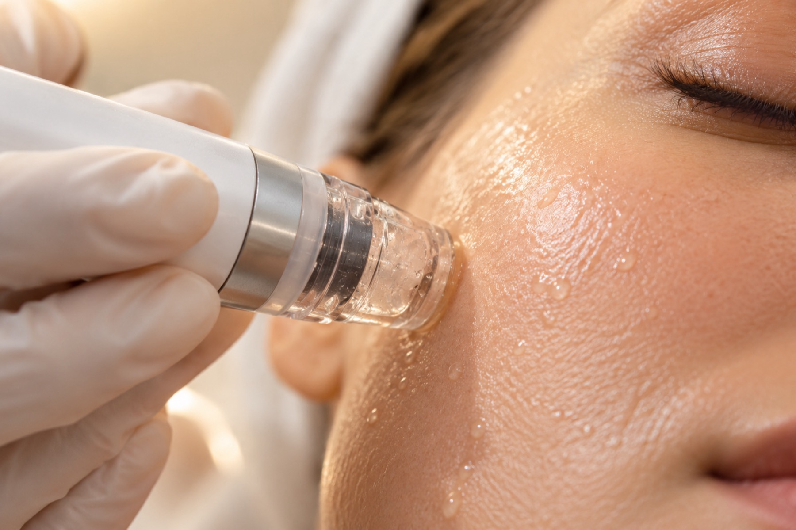

Ense
Ästhetik mitten im Dorf.
Wimpern, Brauen und Haut bei KABO Beauty in Ense. Eine Stylistin, ein Raum, kein Gedränge.
Termin per Instagram-DM anfragenLeistungen
Sieben Behandlungen, ein ruhiger Look.
-
01
Aqua Facial / HydraFacial
Reinigung, sanftes Peeling und Feuchtigkeit in einem Termin. Wenn es kälter wird, tut das der Haut besonders gut, und sie sieht danach frisch aus.
-
02
Microneedling
Feine Nadeln regen die Haut zur Erneuerung an. Vorab klären wir, ob das zu Ihrer Haut und Ihrem Anliegen passt.
-
03
Wimpernlifting
Ihre eigenen Wimpern werden nach oben geschwungen und getönt. Der Blick wirkt offener. Verlängert wird nichts.
-
04
Browlifting / Brow Lamination
Die Brauenhärchen werden in Form gebracht und fixiert. Die Braue sitzt danach geordnet und voll, den ganzen Tag.
-
05
Wimpernverlängerung
Einzelne Wimpern werden an Ihre eigenen gesetzt. Ob dezent oder mit mehr Volumen, entscheiden wir zusammen, passend zu Ihrem Gesicht.
-
06
Zahnschmuck
Ein kleiner funkelnder Stein auf dem Zahn. Er wird schmerzfrei aufgesetzt und lässt sich jederzeit wieder entfernen.
-
07
Individuelle Gesichtsbehandlungen
Nicht jede Haut braucht dasselbe. Wir stellen die Behandlung passend zu Ihrer Haut und Ihrem Tag zusammen.

Das Studio
Ein ruhiger Raum und Zeit für Sie.
Bei KABO Beauty behandelt Sie die Inhaberin selbst, in privater Atmosphäre. Kein Durchlauf, kein Blick auf die Uhr. Erst die Beratung, dann jedes einzelne Haar.
Das Studio liegt in Ense. Die genaue Adresse bekommen Sie mit der Terminbestätigung.
Ablauf
Ihr Termin in drei Schritten.
-
I
Anfrage per Direktnachricht
Sie schreiben uns auf Instagram oder über das Formular, welche Behandlung Sie interessiert und wann es passt.
-
II
Beratung und Behandlung
Vor Ort besprechen wir Ihre Wünsche und legen den Look gemeinsam fest. Dann dauert die Behandlung so lange, wie sie eben dauert.
-
III
Nachpflege-Tipps
Zum Schluss zeigen wir Ihnen, wie Sie das Ergebnis zu Hause pflegen, damit es lange hält.
Ergebnisse
Details, die man sieht.



Kundinnenstimmen
Was Kundinnen sagen.
Ich wollte es ganz natürlich, und so ist es geworden. Man sieht es, aber es wirkt wie meine eigenen Wimpern.
Ich habe mich gleich wohlgefühlt. Es ist ruhig, mir wurde alles erklärt, und mit tollen Brauen bin ich heimgegangen.
Meine Haut war nach dem Aqua Facial richtig frisch. Ich komme wieder.
FAQ
Gut zu wissen.
Wie bereite ich mich auf den Termin vor?
Kommen Sie am besten ungeschminkt, vor allem an den Augen. Vor Wimpernbehandlungen bitte keine Wimperntusche und keine ölhaltigen Produkte. Fragen zur Haut klären wir vorab kurz.
Wie lange dauert eine Behandlung?
Das kommt auf die Behandlung an. Ein Lifting geht schneller als eine Wimpernverlängerung oder eine individuelle Gesichtsbehandlung. Wie lange Ihr Termin dauert, sagen wir Ihnen bei der Terminvergabe.
Wie pflege ich das Ergebnis zu Hause?
Persönliche Tipps bekommen Sie nach dem Termin. Als Faustregel gilt: In den ersten 24 Stunden kein Wasser, keine Hitze, nicht reiben.
Was gilt, wenn ich einen Termin absagen muss?
Sagen Sie uns bitte so früh wie möglich Bescheid, am einfachsten per Direktnachricht. Dann vergeben wir den Termin neu und finden einen Ersatz für Sie.
Kontakt & Anfahrt
Termin anfragen.
Am schnellsten erreichen Sie uns per Direktnachricht auf Instagram.
KABO Beauty
Ense
Die genaue Adresse bekommen Sie mit der Terminbestätigung.